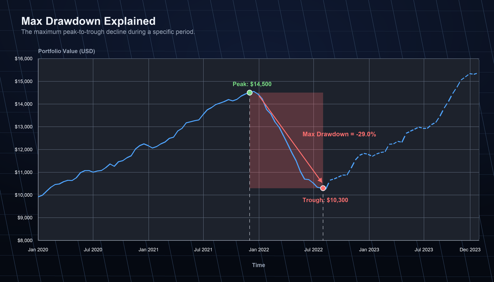
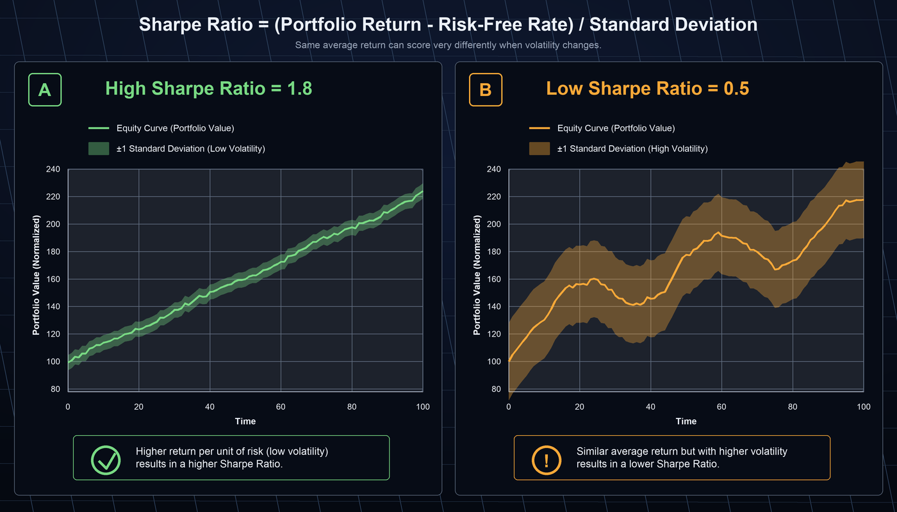
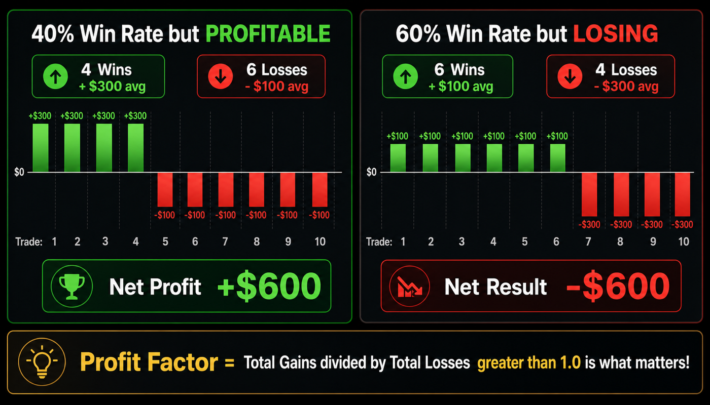

Getting Started¶
A complete onboarding guide — from installing AlphaForge CLI to reading your first backtest.
- The 10-minute Free-plan walkthrough is at the top. No license purchase required.
- After that you'll find detailed install instructions, Whop login, uninstall, and troubleshooting.
10-Minute First Backtest on the Free Plan¶
What the Free plan covers
- Backtesting & optimization ✅ (data capped at 2023-12-31)
- Optimization trials: up to 50 per run
- Pine Script export ❌ (paid plan required)
See Freemium Limits for full details.
Step 1 — Install (~2 min)¶
Verify the installation.
If you see a version number, you're ready. For manual installation or custom install paths, see Detailed Installation.
Step 2 — Sign in with Whop (~1 min)¶
AlphaForge uses OAuth 2.0 PKCE authentication via your Whop account. The next command opens a browser automatically.
After you complete the browser flow, credentials are cached at $XDG_CONFIG_HOME/forge/credentials.json (default ~/.config/forge/credentials.json).
You can confirm the login state at any time:
User ID : user_abc123
Access token : 2026-04-12 12:30 UTC (45 min remaining)
Last verified : 2026-04-12 11:45 UTC (13 min ago)
Plan : annual
Free plan works for the basics
Some features (e.g. Pine Script export) require a paid plan, but backtesting, optimization, and strategy management are available on Free.
Step 3 — Prepare a strategy file (~2 min)¶
Create a quickstart/ directory and save the sample strategy JSON.
Save the following as sma_cross.json.
{
"strategy_id": "sma_cross_qs",
"name": "SMA Crossover Quickstart",
"version": "1.0.0",
"description": "SMA(10)/SMA(50) golden-cross strategy (quickstart sample)",
"target_symbols": ["SPY"],
"asset_type": "stock",
"timeframe": "1d",
"indicators": [
{ "id": "sma_fast", "type": "SMA", "params": { "length": 10 }, "source": "close" },
{ "id": "sma_slow", "type": "SMA", "params": { "length": 50 }, "source": "close" }
],
"entry_conditions": {
"long": {
"logic": "AND",
"conditions": [{ "left": "sma_fast", "op": ">", "right": "sma_slow" }]
}
},
"exit_conditions": {
"long": {
"logic": "AND",
"conditions": [{ "left": "sma_fast", "op": "<", "right": "sma_slow" }]
}
},
"risk_management": {
"position_size_pct": 10.0,
"position_sizing_method": "fixed",
"max_positions": 1,
"leverage": 1.0
}
}
Step 4 — Run the backtest (~2 min)¶
Run a backtest within the Free plan's data range (up to 2023-12-31).
Data is fetched automatically
On first run, forge data fetch SPY --start 2019-01-01 --end 2023-12-31 runs automatically. This may take a few seconds.
Step 5 — Read the results (~3 min)¶
When complete, you'll see output like this.
Sample output
Actual numbers vary depending on the data fetched.
==> SPY 2019-01-01 → 2023-12-31 (1d)
trades: 9 win_rate: 55.6% profit_factor: 1.82
total_return: +38.4% cagr: +6.7% sharpe: 0.88
max_drawdown: -14.2% exposure: 41.5%
final_equity: $13,840 (initial: $10,000)
A quick read of the key metrics is below. For the full metric list, see Reading the Results in detail or the CLI Reference.
| Metric | This run | What it means |
|---|---|---|
| CAGR | +6.7% | Annualized return (compound). Compare against S&P 500 (~10% avg). |
| Sharpe | 0.88 | Risk-adjusted return. 1.0+ is the target. Getting close! |
| Max Drawdown | -14.2% | Worst peak-to-trough drop. Staying under 20% makes it easier to stick with a strategy. |
| Win Rate | 55.6% | Percentage of winning trades. 40–60% is normal for trend-following. |
| Profit Factor | 1.82 | Total profit ÷ total loss. 1.5+ is solid. |
| Trades | 9 | Total trades in the period. Aim for 30+ for statistical reliability. |
What to do next¶
| Goal | Where to go |
|---|---|
| Pick the next page based on your role | Use Cases by Goal |
| Optimize parameters | optimize command |
| Validate against overfitting | End-to-End Workflow |
| Try complex strategy templates | Strategy Templates |
| Connect to TradingView | Pine Script Integration Guide |
| Understand Free plan limits | Freemium Limits |
Detailed Installation¶
Requirements¶
- macOS 12 (Monterey) or later / Ubuntu 22.04 or later / Windows 11
- Internet access (for Whop login and the first data fetch)
- Paid plans only: a valid AlphaForge license key from the pricing page
Install procedure¶
Run the following command in your terminal. The installer downloads the latest binary and places it in /usr/local/bin.
Run this in PowerShell. It installs the binary into %USERPROFILE%\.forge\bin and updates PATH automatically.
New terminal
Open a new terminal window after installation before continuing.
-
Download the binary for your platform from GitHub Releases.
-
macOS / Linux: make it executable and move it to a directory on your PATH.
-
Windows: place the binary in any folder and add that folder to PATH.
Whop Login¶
AlphaForge uses OAuth 2.0 PKCE authentication with your Whop account. A one-time login is required for all plans.
1. Check installation¶
Confirm that the binary is available.
2. Sign in with Whop¶
The command launches the OAuth flow in your browser.
Credentials are cached at $XDG_CONFIG_HOME/forge/credentials.json (default ~/.config/forge/credentials.json). Internet access is required.
3. Verify the login state¶
You can inspect the cached user ID and token expiry:
4. Verify commands¶
Confirm that backtest commands are available.
Reading the Results (Detailed)¶
The six metrics you'll look at first. For the full metric list, see the CLI Reference and Strategy Templates.
| Metric | Meaning | Rule of thumb |
|---|---|---|
| CAGR | Compound annual growth rate | Compare against the market benchmark (S&P 500: ~10%). Positive but below market = limited edge. |
| Sharpe Ratio | Risk-adjusted return | ≥ 1.0 is "usable", ≥ 1.5 is good, ≥ 2.0 is top-tier. Negative is out. |
| Max Drawdown | Largest peak-to-trough equity drop | Shallower is better. Beyond −20% becomes psychologically hard to keep trading. |
| Win Rate | Share of profitable trades | ~50% is typical. Trend-following: 30–40%. Mean-reversion: 60–70%. |
| Profit Factor | Gross profit ÷ gross loss | ≥ 1.5 is good, ≥ 2.0 is excellent. < 1.0 means net loss. |
| Total Trades | Number of trades over the test period | Aim for 30+ for statistical significance. Too few suggests overfitting risk. |



What to try next
- Parameter optimization:
forge optimize runfor Optuna Bayesian search - Walk-forward validation:
forge optimize walk-forwardto detect overfitting - Strategy templates: try HMM × BB × RSI and others
Uninstall¶
Troubleshooting¶
| Symptom | Cause & Fix |
|---|---|
command not found: forge |
Open a new terminal or run source ~/.bashrc. If that doesn't help, check your PATH. |
No data found for SPY |
Run forge data fetch SPY --start 2019-01-01 --end 2023-12-31 first. |
Free plan: date clipped to 2023-12-31 |
Expected behavior. Data beyond the Free plan cap is automatically excluded. |
Strategy not found: sma_cross_qs |
Check that the strategy_id in your JSON is exactly sma_cross_qs. |
| Authentication error | Verify your network connection and rerun forge auth login. Confirm your Whop membership is active. |
| macOS security warning | System Settings → Privacy & Security → click "Open forge". |
For other issues and detailed FAQ, see /en/install.html.
- For usage questions and conversations with other users, head to GitHub Discussions.
- For individual support, contact support@alforgelabs.com.
Next Steps¶
- Use Cases by Goal — Pick the most relevant next page based on your role (TradingView user / Python developer / Quant / Auto-trading / AI agent user)
- CLI Reference — Every
forgecommand, parameters, and output format - Strategy Templates — Compound strategies like HMM × BB × RSI
- AI-Driven Strategy Exploration Workflow — Autonomous exploration with Claude Code / Codex × AlphaForge